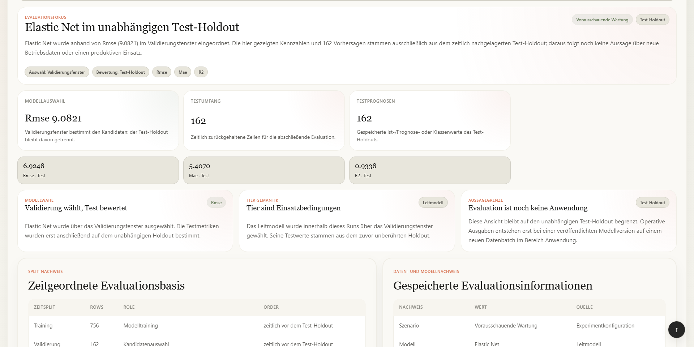
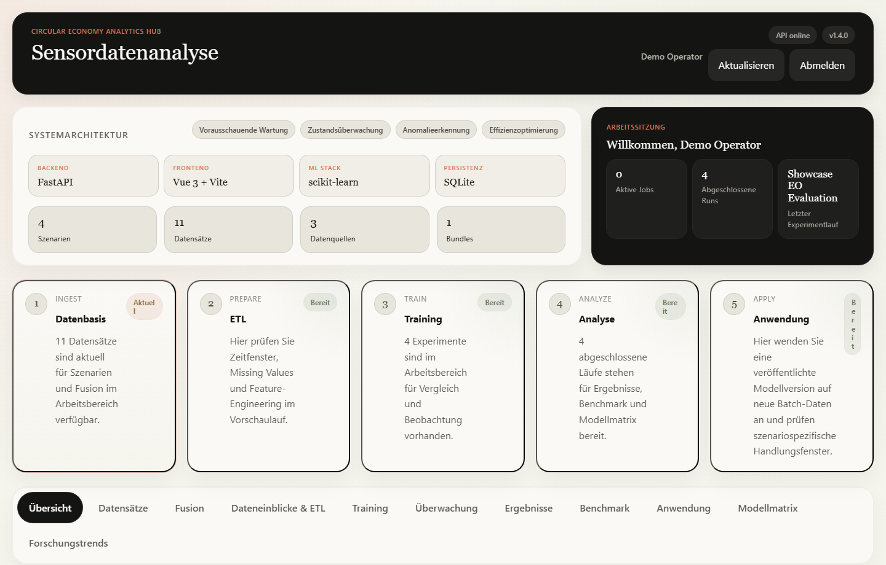
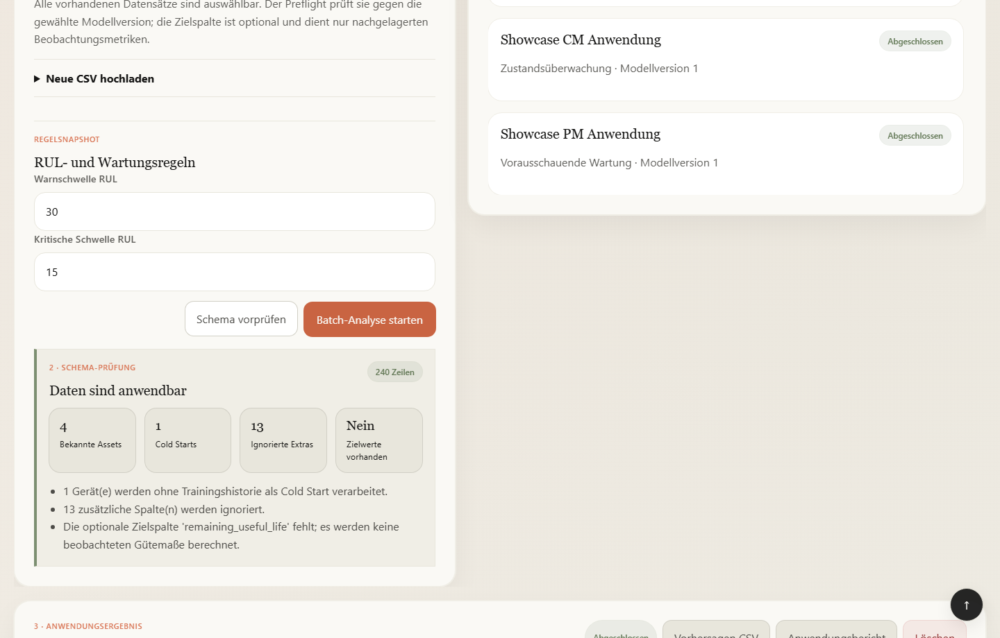
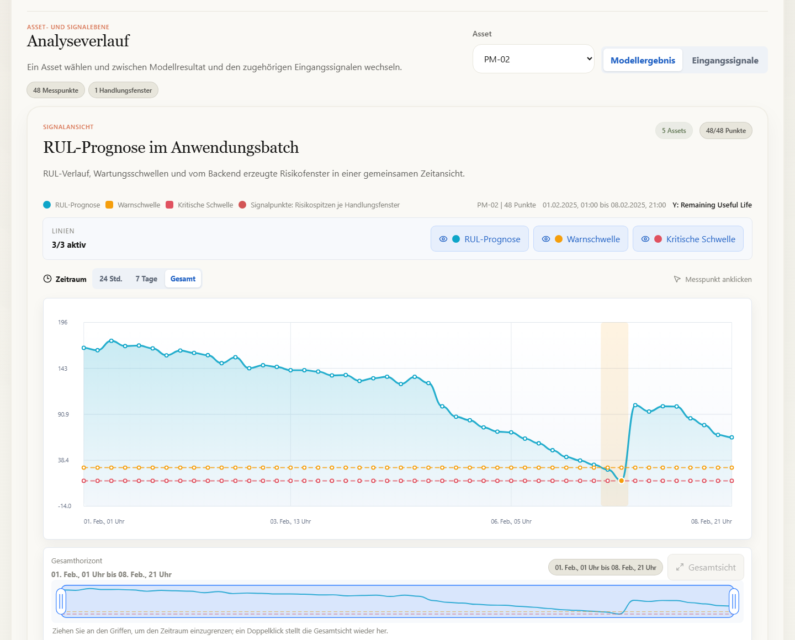

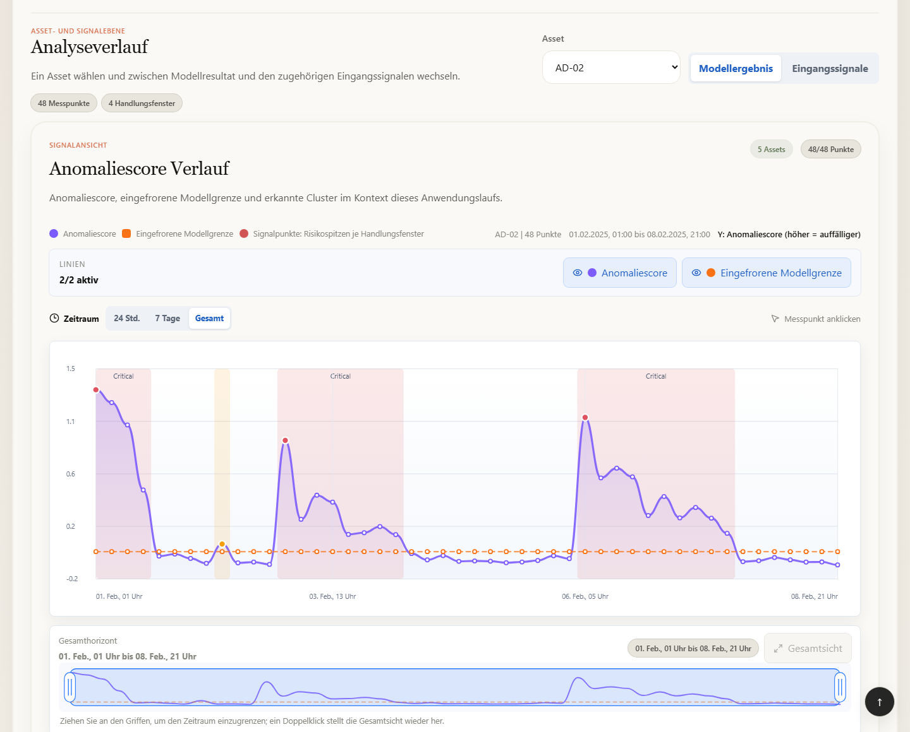
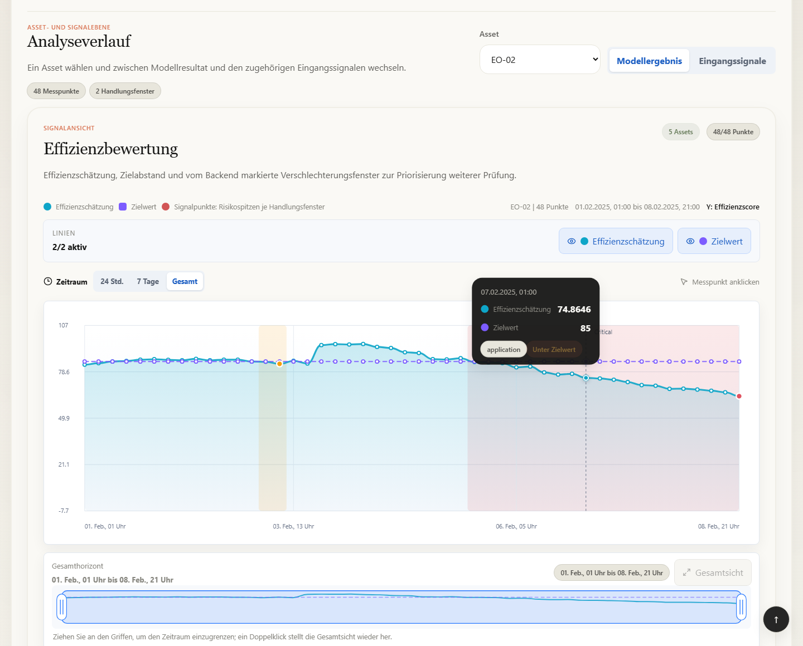
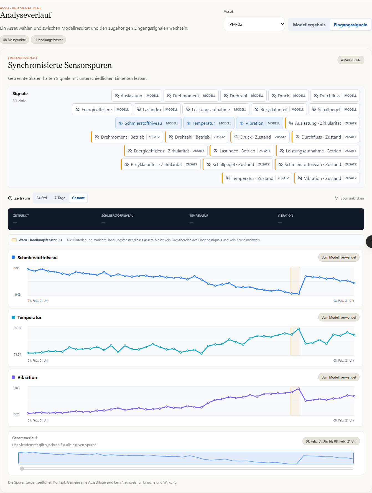
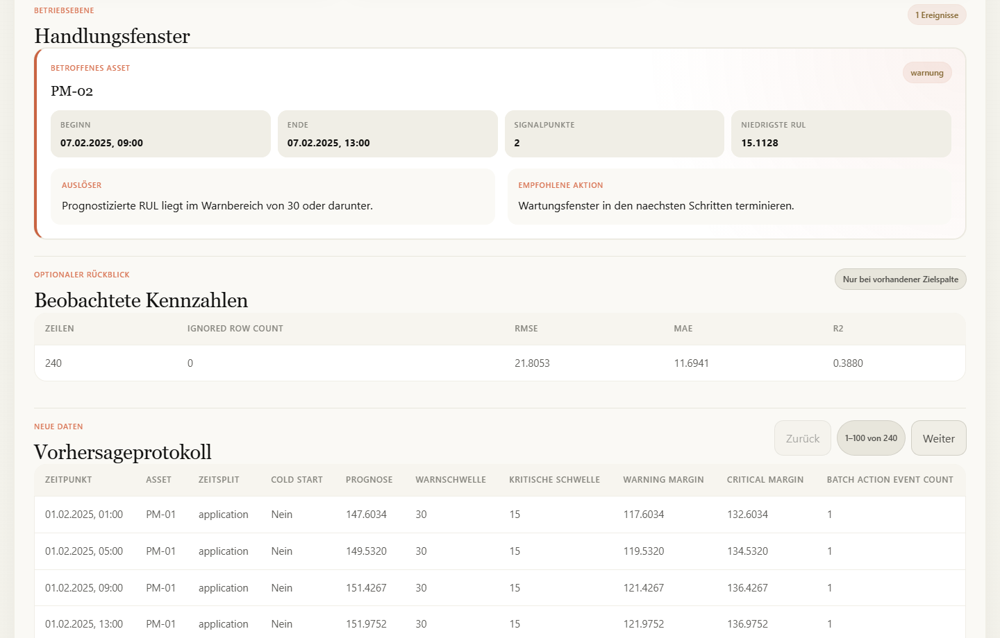

Getrennte Evaluation
70/15/15 ist die vorgesehene zeitliche Aufteilung. Validation wählt das Modell, Test bewertet es.

Forschungsdemonstrator für Wirtschaftsinformatik
Von der begründeten Methodenwahl zur neuen Datenanwendung: Eine lokale Plattform verbindet Literaturkontext, Modellvergleich, explizite Veröffentlichung und Sensordatenanalyse.
Plattformpositionierung
Nach dem Benchmark kann ein ausgewähltes Modell veröffentlicht werden. Die Plattform trainiert es mit allen Daten neu, für die Zielwerte vorliegen, und verarbeitet damit einen späteren Batch. Alles läuft lokal; die Plattform ist kein Produktionsdienst und kein MLOps-System.
70/15/15 ist die vorgesehene zeitliche Aufteilung. Validation wählt das Modell, Test bewertet es.
Ein Leitmodell oder Tier-Sieger wird als feste lokale Modellversion mit allen Daten neu trainiert, für die Zielwerte vorliegen.
Vor der Anwendung prüft der Preflight Spalten, Zeitverlauf, Merkmale und neue Geräte.
Jedes Szenario zeigt für den neuen Batch passende Kurven, Zustände, Warnbereiche und Regeln.
Testprognosen und Evaluationsbericht sind von Anwendungsvorhersagen und Anwendungsbericht getrennt.
Fehlende Werte, Zielspalten, Zeitfenster und die Eignung für das gewählte Szenario entscheiden darüber, ob ein Modelllauf aussagekräftig ist.
Analyseziel, Datenbedarf, Komplexität und Erklärbarkeit bestimmen, welche Modelle zu einem Szenario passen.
Neben Kennzahlen zeigt die Plattform Zeitverläufe, Risikobereiche, wichtige Merkmale und Hinweise für die fachliche Einordnung.
Der Prototyp bringt ML-Verfahren, Arbeitsablauf, Oberfläche und lokale Speicherung in einer Anwendung zusammen. Ergebnisse bleiben ihrem Ursprung zugeordnet.
Arbeitsablauf und Ergebnisverträge
Der Ablauf führt von der Datenvorbereitung über die Modellbewertung zur Veröffentlichung und Anwendung. Test-Ergebnisse und Ergebnisse eines neuen Batches bleiben getrennt nachvollziehbar und exportierbar.
Bewertungsebene
Validation wählt den Kandidaten. Results zeigt danach unabhängige Testmetriken, Datenqualität, Feature-Importance und passende Diagnostik.
Anwendungsebene
Eine veröffentlichte Version verarbeitet den gesamten neuen Batch. Regeln des gewählten Szenarios bestimmen die Darstellung und die Handlungsfenster.
Technische Umsetzung. Vue führt durch 11 deutschsprachige Arbeitsbereiche einschließlich Forschungseinordnung. FastAPI prüft Sitzungen und Eingaben, stellt die Daten-, Analyse- und Berichtsfunktionen bereit und führt Fusion, Feature Engineering, Modellvergleich, Veröffentlichung und Batch-Analyse aus. Ereignisse und Handlungshinweise entstehen im Backend; Oberfläche, CSV und HTML-Berichte verwenden dieselben Ergebnisse. SQLite speichert Metadaten, CSV und joblib die Datensätze, Modellversionen und Analyseausgaben lokal. Technische Architektur →
Algorithmus-Mapping
Mapping begründet die Kandidatenmenge für ein Problem. Literatur liefert den Kontext, die Matrix das ausführbare Modellangebot und der Benchmark den Vergleich auf dem gewählten Datensatz und Split.
Asset-Lebensdauer
RUL-Regression · RMSERUL-Kurve und WartungsrisikofensterInspektions- und Aufarbeitungspriorität
Mehrklassenklassifikation · Macro-F1Zustandsband, Segmente und ÜbergängeVermeidung von Fehlern und Ausschuss
One-Class · Average PrecisionScore, feste Grenze und EreignisclusterOperative Ressourceneffizienz
Score-Regression · RMSEEffizienzschätzung, Zielabstand und TrendIm Forschungsbereich ist jeder Quelle mit DOI ein klarer Geltungsbereich zugeordnet: Szenario, Methodenfamilie oder bestimmtes Modell. Die Plattform arbeitet mit tabellarischen Sensordaten. Bilder, Audiowellenformen, hyperspektrale Daten und Daten aus digitalen Produktpässen (DPP) werden nicht verarbeitet.
Oberfläche und Prozess
Die Ansichten werden mit synthetischen Daten in einer getrennten lokalen Umgebung erfasst. Sie zeigen die aktuelle Oberfläche; sie belegen keine Leistung im Industriebetrieb.

Arbeitsbereich
Die Startansicht fasst den lokalen Arbeitsstand zusammen und führt zum nächsten Schritt.
Übersicht: Arbeitsstatus und Einstieg in den Analysezyklus
Anwendung auf neue Daten
Die 4 Ansichten zeigen veröffentlichte Modellversionen auf neuen Beispieldaten ohne Zielspalte. Jeder Batch enthält auch 1 unbekanntes Gerät, das als Cold Start gekennzeichnet wird. Die Beispieldaten zeigen, wie der Ablauf funktioniert. Aussagen zur Leistung mit realen Industriedaten lassen sich daraus nicht ableiten.

Preflight vor Inferenz
Fehlende Pflichtmerkmale, vollständig leere Spalten und Zeitangaben, die nicht an die Trainingshistorie anschließen, werden abgelehnt. Zusätzliche Spalten werden dokumentiert; die Zielspalte darf fehlen. Der aktuelle Prototyp verlangt außerdem dieselbe Szenariozuordnung für Datensatz und Modellversion; passende Spalten allein reichen bei abweichender Zuordnung noch nicht aus.

Restlebensdauer und kritische Risikofenster.

Zustandsband, Dauer und Wechsel.

Feste Grenze und zusammenhängende Ereignisse.

Score, Lücke und Verschlechterungstrend.
Handlungsfenster entstehen aus konfigurierbaren, gespeicherten Regeln. Vor einer realen Nutzung müssen Fachleute diese Regeln festlegen und prüfen. Die Hinweise sind keine automatisch freigegebenen Handlungsanweisungen.
Anwendung · Signale
Zuerst ein Asset wählen, dann zwischen Ergebnis und numerischen Sensorspuren wechseln. Zusätzliche Kontextsignale sind als vom Modell ungenutzt gekennzeichnet. Zeitliche Überlagerung zeigt keine Kausalität.

Anwendung · Qualitätsprüfung
Liegen für einen neuen PM-Batch tatsächliche Zielwerte vor, zeigt die Anwendung nachträglich RMSE, MAE und R². Das Beispiel vergleicht 240 RUL-Vorhersagen mit beobachteter Restlebensdauer. Die Zielwerte ändern weder Vorhersagen noch Ereignisse. Der Rückblick-Batch ist für diese Prüfung vorgesehen, nicht für Training; diese Nutzungsgrenze wird derzeit noch nicht an jedem Einstieg technisch erzwungen.

Überprüfbarkeit und Erklärung
Zu jedem Ergebnis speichert das System Datenbasis, Split, Modellkandidat, Modellversion und verwendete Regeln. So lässt sich die Herkunft einer Ausgabe prüfen. Ob sie unter realen Bedingungen fachlich richtig ist, muss weiterhin mit Industriedaten und Fachwissen untersucht werden.
Test Holdout
Results zeigt, welches Modell bewertet wurde, auf welchem Split die Kennzahlen beruhen und welche Merkmale das Modell am stärksten berücksichtigt hat. Für jede Aufgabe kommt eine passende Diagnose hinzu.
Neuer Batch
Bei jedem Anwendungslauf sind Modellversion, Eingabedatensatz, Preflight und verwendete Regeln zu sehen. Die Seite kennzeichnet Cold Starts und zeigt Kurven, Ereignisse und eigene Exporte.
Vor dem Training prüft die Plattform Datensatz, Bundle, Zielspalte, numerische Merkmale und Warnungen.
Training, Validation und Test haben getrennte Rollen. Bei zu wenigen unterschiedlichen Zeitstempeln ist die zeitliche Trennung noch nicht zuverlässig abgesichert.
Benchmark, Hauptmetrik und Modellprofil begründen die Auswahl innerhalb der geprüften Kandidaten.
Die Testdiagnostik bewertet das Modell. Ergebnisse für neue Batches enthalten Zeitverlauf, Regeln, Ereignisse und einen eigenen Export.
Projektstand
Der Prototyp verbindet Algorithmus-Mapping, Offline-Evaluation und lokale Entscheidungsunterstützung. Er wurde noch nicht mit realen Industriedaten validiert und ist nicht produktionsreif.
Für ML in der Kreislaufwirtschaft müssen Daten, Methoden und Ergebnisse in einem gemeinsamen Ablauf zusammenkommen.
Ziel ist eine lokale Plattform für Sensordaten, ETL, Algorithmus-Mapping, Modellvergleich, Anwendung und Export.
Backend, Frontend, lokale Speicherung, 4 Szenarien, Modellbibliothek, Mapping und Berichte sind umgesetzt.
Beispieldaten durchlaufen Evaluation, Veröffentlichung und Anwendung innerhalb des Prototyps.
Technische Prüfungen liegen vor; Nutzerbefragung, Expertenreview und Validierung mit realen Industriedaten stehen noch aus.
Showcase, Dokumentation und exportierbare Berichte halten Aufbau, Ergebnisse und Grenzen des Prototyps fest.
EvaluationNutzerfeedback, Expertenwissen und reale Daten fließen in die Weiterentwicklung zurück.Iteration
Vorbereitete Evaluation
Die öffentliche Seite zeigt den 7-stufigen Aufgabenpfad und 2 Fragebögen. Antworten werden nicht gespeichert.